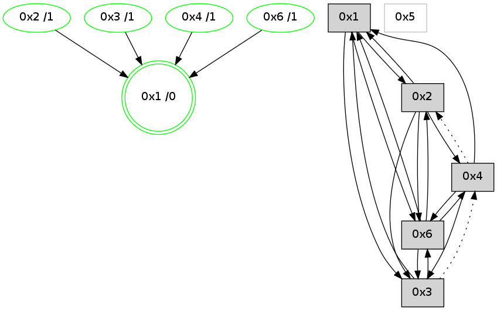

>> << IDX [start] -100 -25 -5 +0 +5 +25 +100 [770.298907042]
 Previous packets
----------------------------------------------------------------------
765.377832 beacon01(adaf) #0 coord=01,02,05,03,04,06 cycle=432.0ms assoc
-- color-indic=0 64 36 98
765.387794 beacon02(adaf) #0 coord=01,02,05,03,04,06 cycle=432.0ms assoc 64 67 67
765.397793 beacon05(adaf) #0 coord=01,02,05,03,04,06 cycle=432.0ms assoc 64 c1 4d
765.407793 beacon03(adaf) #0 coord=01,02,05,03,04,06 cycle=432.0ms assoc 64 5d 69
765.417793 beacon04(adaf) #0 coord=01,02,05,03,04,06 cycle=432.0ms assoc 64 fb 43
765.427794 beacon06(adaf) #0 coord=01,02,05,03,04,06 cycle=432.0ms assoc 64 8f 5f
765.439500 [Hello(6): seq=482 sym=3,4,1,2 sysInfo=hasWarning stat=3:1,0,6,1/4:1,0,2,1/1:9,0,9,0/2:3,0,2,2]
----------------------------------------------------------------------
765.869939 beacon01(adaf) #0 coord=01,02,05,03,04,06 cycle=432.0ms assoc
-- color-indic=0 64 4e 35
765.879902 beacon02(adaf) #0 coord=01,02,05,03,04,06 cycle=432.0ms assoc 64 1f ca
765.889900 beacon05(adaf) #0 coord=01,02,05,03,04,06 cycle=432.0ms assoc 64 b9 e0
765.899901 beacon03(adaf) #0 coord=01,02,05,03,04,06 cycle=432.0ms assoc 64 25 c4
765.909900 beacon04(adaf) #0 coord=01,02,05,03,04,06 cycle=432.0ms assoc 64 83 ee
765.919901 beacon06(adaf) #0 coord=01,02,05,03,04,06 cycle=432.0ms assoc 64 f7 f2
765.934368 [Hello(1): seq=468 sym=2,3,4,6 sysInfo= stat=2:10,0,1,2/3:7,0,7,1/4:8,0,7,4/6:9,0,2,2]
----------------------------------------------------------------------
766.362046 beacon01(adaf) #0 coord=01,02,05,03,04,06 cycle=432.0ms assoc
-- color-indic=0 64 8a 5a
766.372007 beacon02(adaf) #0 coord=01,02,05,03,04,06 cycle=432.0ms assoc 64 db a5
766.382007 beacon05(adaf) #0 coord=01,02,05,03,04,06 cycle=432.0ms assoc 64 7d 8f
766.392008 beacon03(adaf) #0 coord=01,02,05,03,04,06 cycle=432.0ms assoc 64 e1 ab
766.402010 beacon04(adaf) #0 coord=01,02,05,03,04,06 cycle=432.0ms assoc 64 47 81
766.412009 beacon06(adaf) #0 coord=01,02,05,03,04,06 cycle=432.0ms assoc 64 33 9d
766.423719 [Hello(6): seq=483 sym=3,4,1,2 sysInfo=hasWarning stat=3:1,0,6,1/4:1,0,2,1/1:10,0,9,0/2:3,0,2,2]
----------------------------------------------------------------------
766.854154 beacon01(adaf) #0 coord=01,02,05,03,04,06 cycle=432.0ms assoc
-- color-indic=0 64 c6 ea
766.864115 beacon02(adaf) #0 coord=01,02,05,03,04,06 cycle=432.0ms assoc 64 97 15
766.874115 beacon05(adaf) #0 coord=01,02,05,03,04,06 cycle=432.0ms assoc 64 31 3f
766.884115 beacon03(adaf) #0 coord=01,02,05,03,04,06 cycle=432.0ms assoc 64 ad 1b
766.894116 beacon04(adaf) #0 coord=01,02,05,03,04,06 cycle=432.0ms assoc 64 0b 31
766.904116 beacon06(adaf) #0 coord=01,02,05,03,04,06 cycle=432.0ms assoc 64 7f 2d
766.915192 [Hello(1): seq=469 sym=2,3,4,6 sysInfo= stat=2:10,0,1,2/3:7,0,7,1/4:8,0,7,4/6:10,0,2,2]
766.918347 [STC(1) #0.52 new-neigh,to-color d=0]
766.921223 [Hello(4): seq=570 sym=3,6,1 sysInfo= stat=3:0,0,0,0/6:3,0,3,9/1:8,0,10,0]
766.924912 [Hello(3): seq=568 sym=1,6 asym=4 sysInfo=hasWarning stat=1:7,0,6,0/6:2,0,7,8/4:0,0,1,1]
----------------------------------------------------------------------
767.346261 beacon01(adaf) #0 coord=01,02,05,03,04,06 cycle=432.0ms assoc
-- color-indic=0 64 02 85
767.356223 beacon02(adaf) #0 coord=01,02,05,03,04,06 cycle=432.0ms assoc 64 53 7a
767.366222 beacon05(adaf) #0 coord=01,02,05,03,04,06 cycle=432.0ms assoc 64 f5 50
767.376224 beacon03(adaf) #0 coord=01,02,05,03,04,06 cycle=432.0ms assoc 64 69 74
767.386224 beacon04(adaf) #0 coord=01,02,05,03,04,06 cycle=432.0ms assoc 64 cf 5e
767.396223 beacon06(adaf) #0 coord=01,02,05,03,04,06 cycle=432.0ms assoc 64 bb 42
767.408411 [Hello(6): seq=484 sym=3,1,2 sysInfo=hasWarning stat=3:2,0,6,1/1:11,0,10,0/2:4,0,2,2]
767.411409 [STC(6)->1 #0.52 new-neigh,stable,to-color d=1]
767.414659 [TreeStatus(6)-.->1 #0.52 new-neigh,stable child=1]
----------------------------------------------------------------------
767.838369 beacon01(adaf) #0 coord=01,02,05,03,04,06 cycle=432.0ms assoc
-- color-indic=0 64 4f 82
767.848330 beacon02(adaf) #0 coord=01,02,05,03,04,06 cycle=432.0ms assoc 64 1e 7d
767.858330 beacon05(adaf) #0 coord=01,02,05,03,04,06 cycle=432.0ms assoc 64 b8 57
767.868331 beacon03(adaf) #0 coord=01,02,05,03,04,06 cycle=432.0ms assoc 64 24 73
767.878331 beacon04(adaf) #0 coord=01,02,05,03,04,06 cycle=432.0ms assoc 64 82 59
767.888331 beacon06(adaf) #0 coord=01,02,05,03,04,06 cycle=432.0ms assoc 64 f6 45
767.900016 [Hello(4): seq=571 sym=3,6,1 sysInfo= stat=3:1,0,0,0/6:3,0,4,10/1:8,0,10,0]
767.903706 [Hello(2): seq=1061 sym=6,1,3 sysInfo= stat=6:8,0,1,3/1:6,0,9,0/3:7,0,5,1]
767.905714 [Hello(1): seq=470 sym=2,3,6 sysInfo= stat=2:11,0,1,2/3:8,0,7,1/6:10,0,3,3]
----------------------------------------------------------------------
768.330476 beacon01(adaf) #0 coord=01,02,05,03,04,06 cycle=432.0ms assoc
-- color-indic=0 64 8b ed
768.340438 beacon02(adaf) #0 coord=01,02,05,03,04,06 cycle=432.0ms assoc 64 da 12
768.350450 beacon05(adaf) #0 coord=01,02,05,03,04,06 cycle=432.0ms assoc 64 7c 38
768.360437 beacon03(adaf) #0 coord=01,02,05,03,04,06 cycle=432.0ms assoc 64 e0 1c
768.370438 beacon04(adaf) #0 coord=01,02,05,03,04,06 cycle=432.0ms assoc 64 46 36
768.380438 beacon06(adaf) #0 coord=01,02,05,03,04,06 cycle=432.0ms assoc 64 32 2a
768.392112 [Hello(6): seq=485 sym=3,1,2 sysInfo=hasWarning stat=3:3,0,6,1/1:12,0,10,0/2:5,0,2,2]
----------------------------------------------------------------------
768.822584 beacon01(adaf) #0 coord=01,02,05,03,04,06 cycle=432.0ms assoc
-- color-indic=0 64 c7 5d
768.832545 beacon02(adaf) #0 coord=01,02,05,03,04,06 cycle=432.0ms assoc 64 96 a2
768.842547 beacon05(adaf) #0 coord=01,02,05,03,04,06 cycle=432.0ms assoc 64 30 88
768.852545 beacon03(adaf) #0 coord=01,02,05,03,04,06 cycle=432.0ms assoc 64 ac ac
768.862545 beacon04(adaf) #0 coord=01,02,05,03,04,06 cycle=432.0ms assoc 64 0a 86
768.872546 beacon06(adaf) #0 coord=01,02,05,03,04,06 cycle=432.0ms assoc 64 7e 9a
768.887931 [Hello(4): seq=572 sym=3,6,1 asym=2 sysInfo= stat=3:1,0,0,0/6:4,0,4,10/1:9,0,10,0/2:0,0,0,0]
768.890512 [Hello(1): seq=471 sym=2,3,6 sysInfo= stat=2:11,0,1,2/3:8,0,7,1/6:11,0,3,3]
----------------------------------------------------------------------
769.314691 beacon01(adaf) #0 coord=01,02,05,03,04,06 cycle=432.0ms assoc
-- color-indic=0 64 03 32
769.324653 beacon02(adaf) #0 coord=01,02,05,03,04,06 cycle=432.0ms assoc 64 52 cd
769.334653 beacon05(adaf) #0 coord=01,02,05,03,04,06 cycle=432.0ms assoc 64 f4 e7
769.344654 beacon03(adaf) #0 coord=01,02,05,03,04,06 cycle=432.0ms assoc 64 68 c3
769.354653 beacon04(adaf) #0 coord=01,02,05,03,04,06 cycle=432.0ms assoc 64 ce e9
769.364654 beacon06(adaf) #0 coord=01,02,05,03,04,06 cycle=432.0ms assoc 64 ba f5
769.376362 [Hello(6): seq=486 sym=3,4,1,2 sysInfo=hasWarning stat=3:4,0,6,1/4:0,0,0,0/1:13,0,10,0/2:5,0,2,2]
769.379595 [STC(1) #0.53 new-neigh,stable,to-color d=0]
----------------------------------------------------------------------
769.806799 beacon01(adaf) #0 coord=01,02,05,03,04,06 cycle=432.0ms assoc
-- color-indic=1 64 c2 5b
769.816760 beacon02(adaf) #0 coord=01,02,05,03,04,06 cycle=432.0ms assoc 64 93 a4
769.826760 beacon05(adaf) #0 coord=01,02,05,03,04,06 cycle=432.0ms assoc 64 35 8e
769.836760 beacon03(adaf) #0 coord=01,02,05,03,04,06 cycle=432.0ms assoc 64 a9 aa
769.846760 beacon04(adaf) #0 coord=01,02,05,03,04,06 cycle=432.0ms assoc 64 0f 80
769.856760 beacon06(adaf) #0 coord=01,02,05,03,04,06 cycle=432.0ms assoc 64 7b 9c
769.867937 [Hello(1): seq=472 sym=2,3,6 sysInfo=coloring-mode-on,ColoringModeRequestCalled stat=2:11,0,1,2/3:8,0,7,1/6:11,0,3,3]
769.870475 [Hello(4): seq=573 sym=3,6,1 asym=2 sysInfo=coloring-mode-on,ColoringModeIndicationCalled stat=3:1,0,0,0/6:5,0,4,10/1:10,0,11,0/2:0,0,0,0]
769.872585 [Hello(2): seq=1063 sym=6,4,1,3 sysInfo=coloring-mode-on,ColoringModeIndicationCalled stat=6:10,0,1,3/4:0,0,0,0/1:8,0,10,0/3:7,0,5,1]
769.875411 [STC(4)->1 #0.53 new-neigh,stable,to-color d=1]
769.877547 [STC(6)->1 #0.53 new-neigh,stable,to-color d=1]
769.880002 [STC(2)->1 #0.53 new-neigh,stable,to-color d=1]